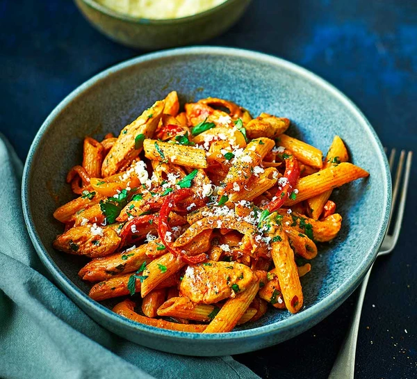

Pasta

What is Pasta?
a dish originally from Italy consisting of dough made from durum wheat and water, extruded or stamped into various shapes and typically cooked in boiling water.
Ingredients required
- 1 package spaghetti
- 1 tablespoon olive oil
- 1/4 pound turkey bacon
- 1/2 large onion, chopped
- 1 clove garlic, minced
- 2 cans tomato sauce
- 1 and 1/2 chopped fresh parsley
- 1/4 teaspoon dried basil
- 1 teaspoon garlic powder
- 1/2 teaspoon pepper
- 1 can peas, drained
- 1/4 cup grated Romano cheese
Directions
- Bring a large pot of lightly salted water to a boil. Add pasta and cook for 8 to 10 minutes or until al dente; drain.
- Heat oil in a large pot over medium heat. Saute bacon, onion and garlic until lightly browned. Stir in tomato sauce. Season with parsley, basil, garlic powder and pepper. Bring to a boil, reduce heat, and simmer 20 to 30 minutes, stirring occasionally. Stir in peas. Toss with pasta until evenly coated. Sprinkle top with Romano.